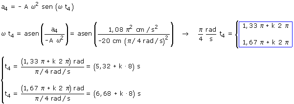
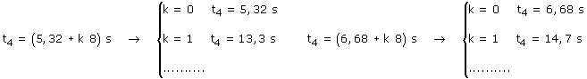

d)
Ecuaciones del movimiento:
|
|
Parámetros Parámetros A = 20 cm, ω = π/4 rad/s (T = 2π/ω = 8 s) φ = 0 |

Aplicación:
Datos: a4 = 1.08π2 cm/s2, Incógnitas: t4

Se obtienen dos series de valores del tiempo separados por el valor del período (8 s)

La primera serie de tiempos corresponde a una fase 1.33π:
el móvil estará a la izquierda del observador moviéndose
hacia la izquierda frenando (a = 1.08π2 cm/s2)
La segunda serie de tiempos corresponde a una fase 1.67π: el móvil
estará a la izquierda del observador moviéndose hacia la
derecha acelerando (a = 1.08π2 cm/s2)
En cada oscilación, el móvil tiene dos veces la misma aceleración y las velocidades correspondientes son iguales y contrarias (En un caso irá frenando y en el otro acelerando).
Vamos a obtener algunos valores del tiempo y ordenarlos: t4 = 5,32, 6,68, 13,3, 14,7,...s
 | t = 5.32 s x = -17.2 m v = -8 cm/s |